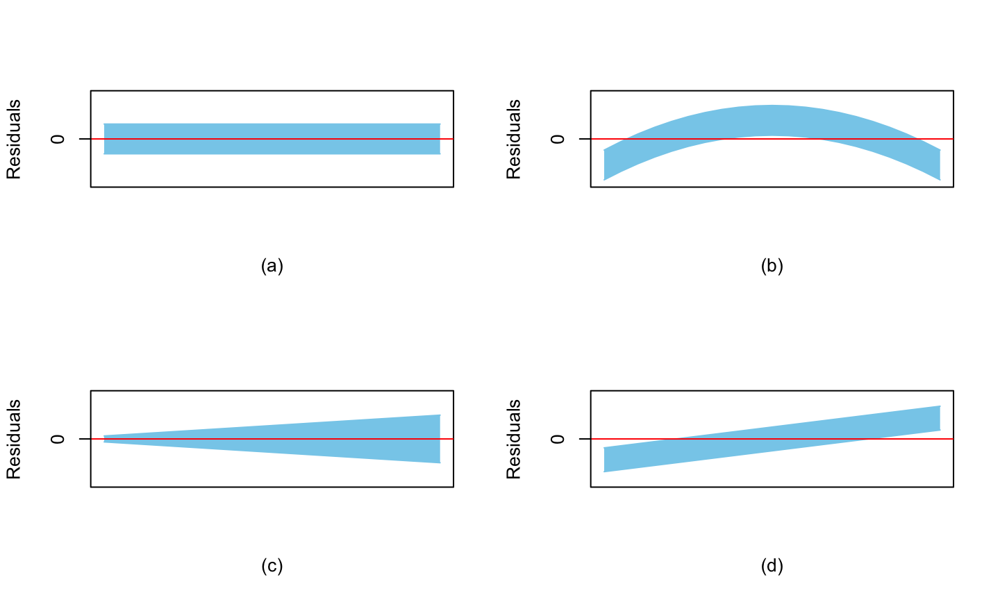
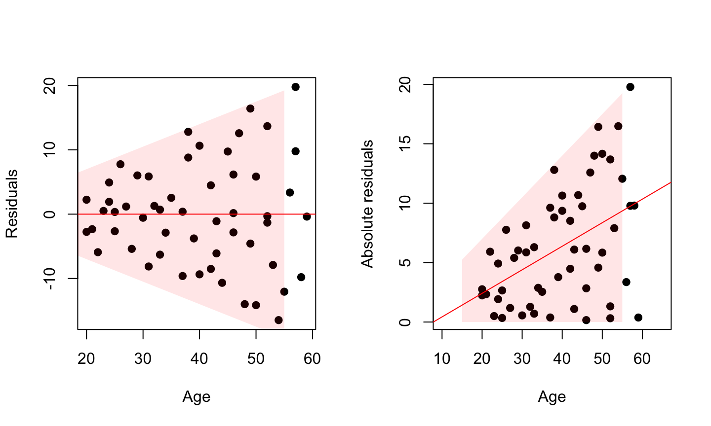
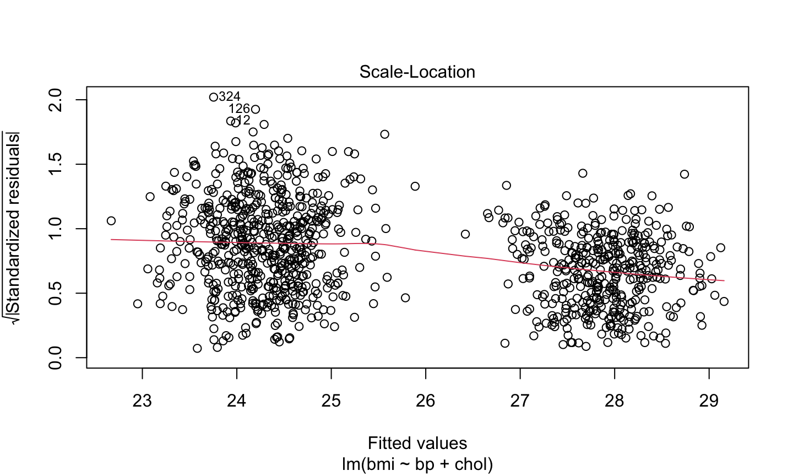
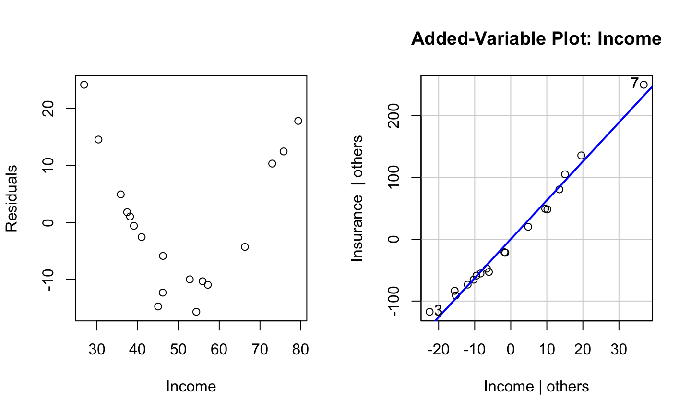
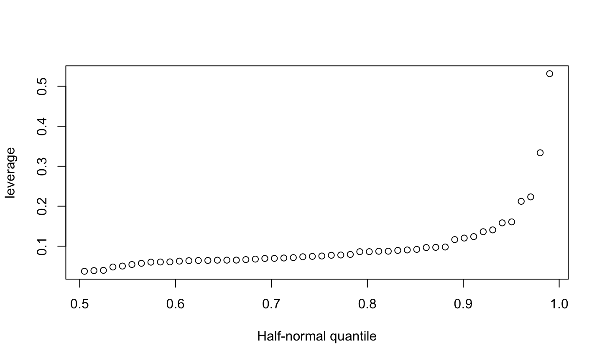
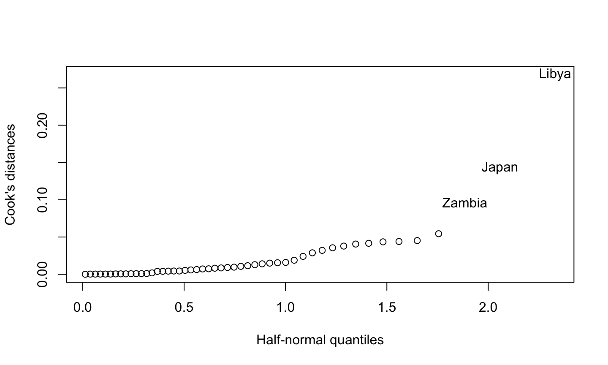
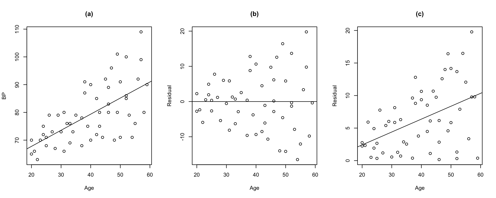

- Nonlinearity of regression function
- Nonconstancy of error variance
- Nonindependence of error terms
- Nonnromality of error terms
- Presence of outliers and influencial observations
6/4/2020
What we need to check?
Residual Plots
Importance
- Diagnostic plots of the response variable are not very useful
- Residual plots usually (indirectly) carries out diagnostics of the response variable
- Residuals gives us information about model structure and the nature of unobserved randomness.
Different plots of residuals
- Plots of residuals against predictor variables
- Plot of residuals against fitted values
- Plot of absolute or squared residuals against fitted values or predictor variables
- Plot of residuals against time or other sequence
- Plots of residuals against omited predictor variables
- Box plot and density plot of residuals
- Q-Q plot of residuals
Reminder

Simulated scenarios

Example (Non-constant error variance)

Test for non-constatnt variance
- If the data is separable in some way then a F test works
- Brown_Forsythe test (a t-test)
- Breusch-Pegan test (also known as Cook-Weisberg score test)
- It is a chi-squared test
Residual Plots
- It can be used to check
- Nonlinear structure
- Non-constant error variance
- Non-zero error mean
- Though it is not used directly to detect unusual observations but gives us an overview of the observations.
- Though it indicates potential structural problem it does not clearly suggest transformation because it fails to distinguish between monotonic and non-monotonic transformation.
- Does not show the nature of the marginal effect of a predictor variable, given the other predictor variables in the model.
Interesting Extreme Example
library(faraway) set.seed(123) male = 600 female = 400 bp = c(rnorm(male, 85, 2), rnorm(female, 75, 1)) bmi = c(rnorm(male, 24, 4), rnorm(female, 28, 2)) chol = c(rnorm(male, 200, 10), rnorm(female, 150, 15)) gender = c(rep(1, male), rep(0, female)) dat = data.frame(bp = bp, bmi= bmi ,chol = chol, gender = gender) lmod = lm(bmi ~ bp + chol, data = dat) sumary(lmod)
## Estimate Std. Error t value Pr(>|t|) ## (Intercept) 48.4499279 2.1428433 22.6101 < 2.2e-16 ## bp -0.2169564 0.0388197 -5.5888 2.95e-08 ## chol -0.0286526 0.0074002 -3.8719 0.000115 ## ## n = 1000, p = 3, Residual SE = 3.38723, R-Squared = 0.23
Interesting Extreme Example (Residual Plot)

What does the residual plot suggests?
## Estimate Std. Error t value Pr(>|t|) ## (Intercept) 9.7006468 7.8100284 1.2421 0.21470 ## bp 0.1604810 0.0823442 1.9489 0.05177 ## chol 0.0038192 0.0168418 0.2268 0.82068 ## ## n = 600, p = 3, Residual SE = 3.89664, R-Squared = 0.01
## Estimate Std. Error t value Pr(>|t|) ## (Intercept) 12.0170106 7.8054019 1.5396 0.12446 ## bp 0.2005841 0.1027723 1.9517 0.05167 ## chol 0.0071092 0.0068681 1.0351 0.30125 ## ## n = 400, p = 3, Residual SE = 2.11171, R-Squared = 0.01
Test for non-constatnt variance
- If the data is separable in some way then a F test works
- Brown_Forsythe test (a t-test)
- Breusch-Pegan test (also known as Cook-Weisberg score test)
- It is a chi-squared test
Added variable plot
- Gives marginal relationship given the other predictors are in the model
- Can be used to investigate if a new variable is worthy to include in the model
- Provide clearer picture compared to residual vs predictor plot
Simulated Scenarios

- No additional information from the predictor
- Helpful addition of the predictor
- Inclusion of the predictor with some transformation.
AV plot example

Component plus residual (CR) plot
The component plus residual (cr) plot (a.k.a, partial residual plot) is a competitor to the added variable plot.
The cr plot shows \(\hat{\beta}_i x_i+\hat{\epsilon}\) versus \(x_i\).
cr plots are useful for checking nonlinear relationships in the variable being considered for inclusion in the model.
They can also suggest potential transformation of the data so that the relationship is linear.
If the scatter plot does not appear to be linear, then there is a nonlinear relationship between the regressor and the response (after accounting for the other regressors).
The slope of the line fit to the cr plot is \(\hat{\beta}_i\).
Unusual observations
Leverage
- A leverage point is an observation that is unusual in the predictor space.
- \(h_{ii}\) is called the leverage value of the \(i\) th observation.
- \(h_{ii}\) is a measure of distance between the \(X\) values for the \(i\)th observation from the mean of the \(X\) values of all \(n\) observations.
- \(h_{ii}\) measures the role of the \(X\) values in determining how important \(y_i\) is in affecting \(\hat{y}_i\)
- A half-normal plot of the leverage values can be used to identify observations with unusually high leverage.
- A leverage value \(h_i\) is usually considered large if it is more than twice as large as the mean leverage value.
Example

Outlier
An outlier is a point that does not fit the current model.
- An outlier is context specific! An outlier for one model may not be an outlier for a different model.
externally studentized residual
\[t_i = \frac{y_i -\hat{y}_{(i)}}{\hat{\sigma}_{(i)}\sqrt{1+x_i^T\left(X_{(i)}^TX_{(i)} \right)^{-1}x_i}} \sim T_{n-p-1}.\]
- Bonferroni correction is needed
Example

Influential observations
An influential observation is one whose removal from the dataset would cause a large change in the fitted model.
An influential observation is usually a leverage point, an outlier, or both.
The Cook’s distance is a popular inferential tool because it reduces influence information to a single value for each observation.
The Cook’s distance for the ith observation is
\[D_i = \frac{(\hat{y} - \hat{y}_{(i)})^T(\hat{y} - \hat{y}_{(i)})}{p\hat{\sigma}^2} = \frac{1}{p}r_i^2\frac{h_i}{1-h_i}\]
Example

Influence plot

## StudRes Hat CookD ## Chile -2.3134295 0.03729796 0.03781324 ## Japan 1.6032158 0.22330989 0.14281625 ## United States -0.3546151 0.33368800 0.01284481 ## Zambia 2.8535583 0.06433163 0.09663275 ## Libya -1.0893033 0.53145676 0.26807042
Correct or Delete the Observation(s)
If they’re data entry errors, correct the problem. If they can’t be fixed, remove them (they’re wrong, so they don’t tell us anything useful).
Remove them if they’re not part of the population of interest (you are studying dogs, but this observation is a cat).
Remove them because they break the model.
This is a bad idea.
Make sure to indicate that you removed them from the data set and explain why.
THIS IS A BAD IDEA.
Fit a Different Model
- An outlier/influential point for one model may not be for another.
- Examine the physical context—why did it happen?
- An outlier/influential point may be interesting in itself.
- An outlier in a statistical analysis of credit card transactions may indicate fraud!
- This may suggest a better model.
- Use robust regression, which is not as affected by outliers/influential observations.
- Never automatically remove outliers/influential points!
- They provide important information that may otherwise be missed.
- Fit the model with and without the influential observation(s).
- Do your results substantively change?
Checking Error
Summary of methods for checking error assumptions
- Mean-zero error assumption:
- Plot of residuals versus fitted values
- Constant error variance assumption:
- Plot of residuals versus fitted values
- Plot of √(|ϵ ̂|) versus fitted values.
- Normal error assumption:
- q-q of residuals
- Shapiro-wilk test
- Autocorrelated errors:
- Plot of residuals versus time
- Plot of successive pairs of residuals
- Durbin-Watson test
Weighted Least Squares
Model
The generalized multiple regression model:
\[Y_i = \beta_0 + \beta_1X_{i1} + \dots + \beta_{p-1}X_{i, p-1} + \epsilon_i\] where,
- \(\beta_0, \beta_1, \dots , \beta_{p-1}\) are parameters
- \(X_{i1}, \dots X_{i, p-1}\) are known constants
- \(\epsilon_i\) are independent \(N(0,\sigma_i^2)\)
Variance-covariance matrix
\[Var(\epsilon) = \begin{bmatrix}\sigma_1^2 & 0 & \dots & 0 \\ 0 & \sigma_2^2 & \dots & 0 \\ \vdots & \vdots & & \vdots \\ 0 & 0 & \dots & \sigma_n^2\end{bmatrix}\]
- OLS assumes equal variance: \(\sigma_1^2 =\dots = \sigma_n^2 = \sigma^2\)
- Using OLS we would get unbiased estimation of the parameters
- The OLS estimates no longer have minimum variance
- We must account for unequal variance in the estimation process
- Consider three cases:
- Error variances are known (unrealistic)
- Error variances are known up to proportionality constant
- Error variances are known (realistic)
Error variances are known
Likelihood
\[L(\beta) = \prod\limits_{i=1}^n \frac{1}{\sqrt{2\pi\sigma_i^2}} \exp \left[ -\frac{1}{2\sigma_i^2} (Y_i -\beta_0 - \beta_1X_{i1} -\dots - \beta_{p-1}X_{i, p-1})^2\right]\]
Define \[w_i = \frac{1}{\sigma_i^2}\]
\[L(\beta) = \left[\prod\limits_{i=1}^n \frac{\sqrt{w_i}}{\sqrt{2\pi}}\right] \exp \left[ -\frac{1}{2} \sum\limits_{i=1}^n w_i(Y_i -\beta_0 - \beta_1X_{i1} -\dots - \beta_{p-1}X_{i, p-1})^2\right]\] Minimize
\[Q_w = \sum\limits_{i=1}^n w_i(Y_i -\beta_0 - \beta_1X_{i1} -\dots - \beta_{p-1}X_{i, p-1})^2\] ## Intuition
- \(w_i\) for \(i=1,\dots , n\) are the regression weights
- In OLS \(w_i=1\) i.e. all observations get equal weights
- Weight \(w_i\) are inversely proportional to the variance \(\sigma_i^2\)
- Weights reflects the amount of information contained in the observations
- An observation with higher variance gets smaller weight
- More precise \(\Rightarrow\) More information \(\Rightarrow\) More weight
In matrix notation
\[W = \begin{bmatrix}w_1 & 0 & \dots & 0 \\ 0 & w_2 & \dots & 0 \\ \vdots & \vdots & & \vdots \\ 0 & 0 & \dots & w_n\end{bmatrix}\]
Normal Equation
\[(X^TWX)\hat{\beta}_w = X^TWY\]
Estimators
\[\hat{\beta}_w = (X^TWX)^{-1}X^TWY\]
Variance of the estimators
\[Var(\hat{\beta}_w = (X^TWX)^{-1}\]
Properties of the estimators
- Unbiased
- Consistent
- Minimum variance among unbiased linear estimators
- When weights are known Var(\(\hat{\beta}_w\)) is generally less than Var(\(\hat{\beta}\))
Error variances unknown
- We need to estimate the error variances.
- Residuals from an OLS gives valuable information about the error variances
- Two methods:
- Estimation of variance function
- Use of replicates or near replicates
Estimation of variance
- Squared residual \(\hat{\epsilon}^2\) is an estimator of \(\sigma_i^2\)
- Absolute residual \(|\hat{\epsilon}|\) is an estimator for \(\sigma_i\)
- Idea
- We can estimate the variance function describing the relation of \(\sigma_i^2\) to relevant predictor variables by first fitting the regression model using unweighted least squares and then regressing \(\hat{\epsilon}^2\) or \(|\hat{\epsilon}|\) against the appropriate predictor variables.
- \(|\hat{\epsilon}|\) is preferred if outliers exist.
General guidelines
A residual plot against \(X_l\) exhibits a megaphone shape. \(\Rightarrow\) Regress the absolute residuals against \(X_l\)
A residual plot against \(\hat{Y}\) exhibits a megaphone shape. \(\Rightarrow\) Regress the absolute residuals against \(\hat{Y}\)
A plot of the squared residuals against \(X_l\) exhibits an upward tendency. \(\Rightarrow\) Regress the squared residuals against \(X_l\)
A plot of the squared residuals against \(X_l\) suggests that the variance increases rapidly with increases in \(X_l\) up to a point and then increases more slowly. \(\Rightarrow\) Regress the absolute residuals against \(X_l\) and \(X_l^2\).
What next?
After the variance function or the standard deviation function is estimated, the fitted values from this function are used to obtain the estimated weights:
\[w_i = \frac{1}{\hat{s}_i^2}\quad \text{ where } \hat{s}_i \text{ is fitted value from standard deviation function}\] \[w_i = \frac{1}{\hat{v}_i}\quad \text{ where } \hat{v}_i \text{ is fitted value from variance function}\]
The parameters are then estiamted as
\[\hat{\beta}_w = (X^TWX)^{-1}X^TWY\]
Use of Replicates or Near Replicates
In designed experiments \(\sigma_i^2\) is estimated suing replicate observations at each combination of levels of the predictor variables.
In observation studies, near replicates many be used.
For example, if the residual plot against \(X_l\) shows a megaphone appearance, cases with \(X_1\) values can be grouped together and the variance of the residuals in each group calculated.
- The reciprocal of these variances are the weights.
Example (Strong Interaction ALR4 page 157)
- Response : scattering cross-section (\(y\)), Predictor: square of total energy in the center of mass frame of reference (\(s\))
- Designed experiment
- A very large number of particles was counted at each setting of \(s\)
- The variance of \(y\) is thus known almost exactly
Example (Strong Interaction ALR4 page 157)
## ## Call: ## lm(formula = y ~ x, data = alr4::physics, weights = 1/SD^2) ## ## Weighted Residuals: ## Min 1Q Median 3Q Max ## -2.3230 -0.8842 0.0000 1.3900 2.3353 ## ## Coefficients: ## Estimate Std. Error t value Pr(>|t|) ## (Intercept) 148.473 8.079 18.38 7.91e-08 *** ## x 530.835 47.550 11.16 3.71e-06 *** ## --- ## Signif. codes: 0 '***' 0.001 '**' 0.01 '*' 0.05 '.' 0.1 ' ' 1 ## ## Residual standard error: 1.657 on 8 degrees of freedom ## Multiple R-squared: 0.9397, Adjusted R-squared: 0.9321 ## F-statistic: 124.6 on 1 and 8 DF, p-value: 3.71e-06
Example (Blood pressure)

- \(\Rightarrow\) linear relationship (unweighted)
- \(\Rightarrow\) confirms the nonconstant error variance
- \(\Rightarrow\) a linear relation between Age and standard error is reasonable
Example (Blood pressure)
- Regress absolute residuals against
Age
## Estimate Std. Error t value Pr(>|t|) ## (Intercept) -1.54948 2.18692 -0.7085 0.4817858 ## blood$Age 0.19817 0.05309 3.7328 0.0004705 ## ## n = 54, p = 2, Residual SE = 4.46057, R-Squared = 0.21
- Variance function
\[\hat{s} = -1.5494776 + 0.1981723 Age\]
- Weights
w = 1/lmod_abs_res$fitted.values^2 head(w)
## 1 2 3 4 5 6 ## 0.06920928 0.14655708 0.12661657 0.09725115 0.08625993 0.11048521
head(blood$Age)
## [1] 27 21 22 24 25 23
Example (Blood pressure)
- OLS
## Estimate Std. Error t value Pr(>|t|) ## (Intercept) 56.156929 3.993674 14.0615 < 2.2e-16 ## Age 0.580031 0.096951 5.9827 2.05e-07 ## ## n = 54, p = 2, Residual SE = 8.14575, R-Squared = 0.41
- WLS
wls_mod = lm(BP ~ Age, weights = w, data = blood) sumary(wls_mod)
## Estimate Std. Error t value Pr(>|t|) ## (Intercept) 55.565766 2.520918 22.042 < 2.2e-16 ## Age 0.596342 0.079238 7.526 7.187e-10 ## ## n = 54, p = 2, Residual SE = 1.21302, R-Squared = 0.52